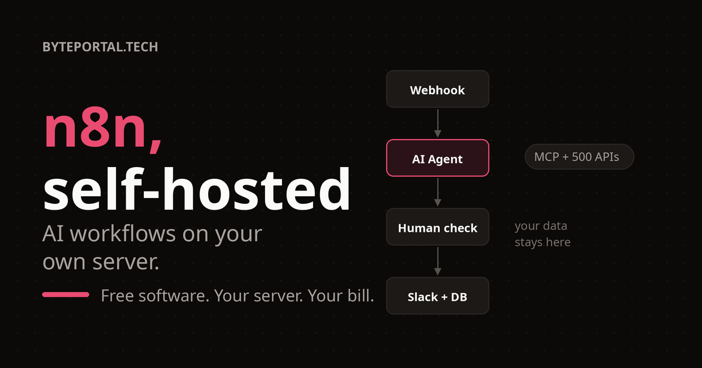
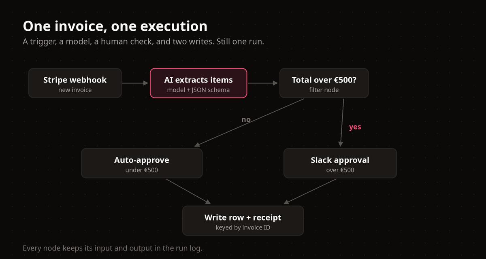
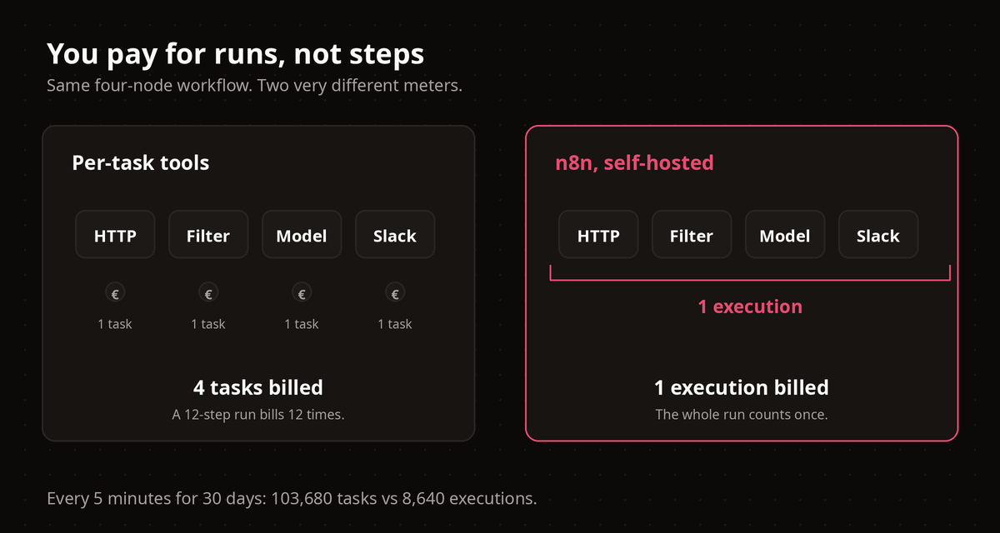
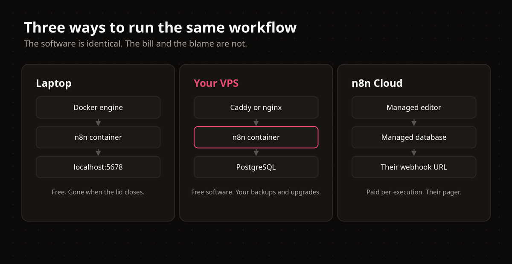

n8n self-hosted: AI workflows without the per-task bill
· 5 min read
Your invoice sync breaks on a Tuesday. Nobody notices until Friday, when a customer asks where their receipt went. The script lives on a laptop that went to sleep.
Zapier or Make would replace that script, but both charge per task. Check a hundred invoices, pay for a hundred tasks. n8n trades that for a server you already rent and a meter that is your own hardware.
Quick Summary (The Short Version)
- • A workflow builder with code inside: Hundreds of integrations, HTTP for the rest, JavaScript and Python nodes, plus AI Agent and MCP nodes.
- • One run counts once: A 12-step workflow is one execution, not twelve tasks. Self-hosted Community has no execution meter at all.
- • You pay in ops: The server, backups, encryption key, and upgrades are yours. The fair-code license forbids reselling n8n as a hosted service.

What n8n actually is
n8n is a workflow builder. A workflow is a graph of nodes, and each node does one job: catch a webhook, query Postgres, call an API, ask a model, send a Slack message.
Stripe fires a webhook when an invoice is paid. A model node pulls the line items out of the PDF. A filter checks the total. Under €500, the workflow writes the row and emails the receipt. Over €500, it asks you in Slack first, then writes. Six nodes, one workflow, one execution.
The run log is not a console dump. Click any node and see the exact JSON that entered and left.
The escape hatch matters too. A Code node runs JavaScript or Python, so the ugly transform takes ten lines. AI Agent, chat trigger, and MCP nodes sit on the same canvas. The homepage says 500+ native integrations; the README says 1,500+ integrations. The plain HTTP node covers the rest.

The billing trick: one run, not one step
Run a 12-step workflow every five minutes for 30 days. That is 8,640 runs. Per-task billing sees 103,680 tasks. n8n sees 8,640 executions. The step count is free.
That is the pitch, and the trap. A workflow that fires every five seconds will eat any server. Cheap per run is not cheap at any volume.
Self-hosted Community has no execution meter. Cloud plans do: €20 per month billed annually for 2,500 executions, €50 for 10,000. A self-hosted Business license meters executions too, and pings a license server daily. Prices checked in November 2026.

The install is two commands
You need Docker. That is the whole prerequisite for a local test.
docker volume create n8n_data
docker run -it --rm --name n8n -p 5678:5678 \
-v n8n_data:/home/node/.n8n \
docker.n8n.io/n8nio/n8nOpen http://localhost:5678 and create the owner account. No cloud signup, no license key, no card. Build the invoice flow, run it once, open the execution log. You will know in ten minutes whether the editor fits your brain.
For a real server, change three things: PostgreSQL instead of the default SQLite, N8N_ENCRYPTION_KEY stored somewhere else, and WEBHOOK_URL set to the public address behind HTTPS.

What breaks at 2 a.m.
Self-hosting does not remove operations. It moves them to your name.
First, the half-finished run: node four writes to Postgres, node five calls Slack, Slack times out. A naive retry writes the row twice. Key the write on the invoice ID, or catch the error in a separate workflow.
Second, the key. Credentials are encrypted with a key in the data directory. Lose it and every stored token is noise. Back up the key separately, then restore one workflow to prove it works.
Third, the blast radius. One instance holds tokens for Slack, GitHub, Stripe, and your database. Port 5678 open to the internet is a bad week waiting to happen. Put a reverse proxy with HTTPS in front, and pull a new image most months; n8n ships a minor version most weeks.
Where free stops, and who should pay
n8n is source-available, not open source. The Sustainable Use License allows internal business use, and personal or non-commercial use. You cannot host it and sell workflow access to customers. Consulting on it is fine.
The Community edition lacks SSO and LDAP, Git-based version control, separate environments, external secret stores, and queue mode for scaling. Those need a paid license, and the self-hosted Business license meters executions too.
Fit check: you already run Docker, your automations touch internal systems, and your bill punishes step-heavy workflows. It also fits when a non-developer needs to read the flow; the canvas is documentation people actually open.
Skip it for a single two-step Zap. The honest alternative there is a cron job and a small script. n8n wins when the branches multiply, or when a human approval has to sit in the middle.
What it is not
- Not open source. Source-available under a fair-code license with commercial limits.
- Not managed. You patch it, back it up, and answer the 2 a.m. page.
- Not a coding agent. It orchestrates models and tools inside a workflow you designed.
- Not a queue at scale on one container. Real throughput needs queue mode, a paid feature.
- Not free for a team that needs SSO, Git sync, or separate environments.
The takeaway
n8n is worth an afternoon if you already pay per step and already have a server. It is not worth a migration weekend if one cron job does the job.
This week, run the two commands and rebuild one workflow by hand. Watch the execution log. Decide with evidence, not a demo video.
Links: n8n, the documentation, the source on GitHub, pricing.
Docs-first look: I read the install docs, license, and pricing but did not run a production migration.